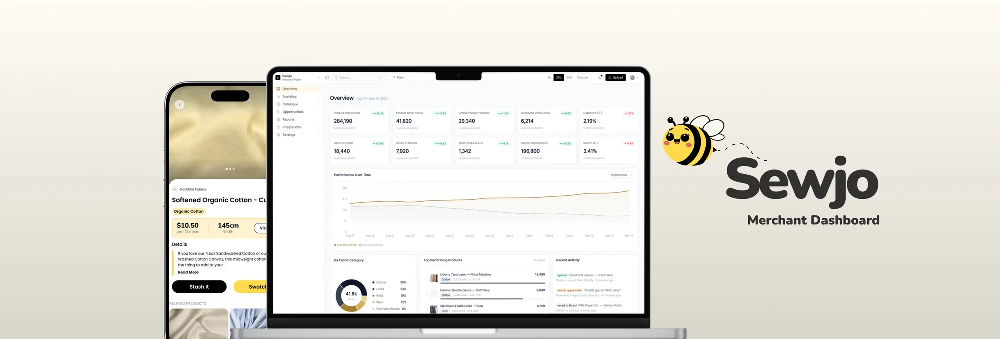
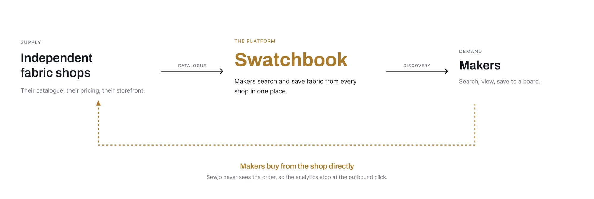
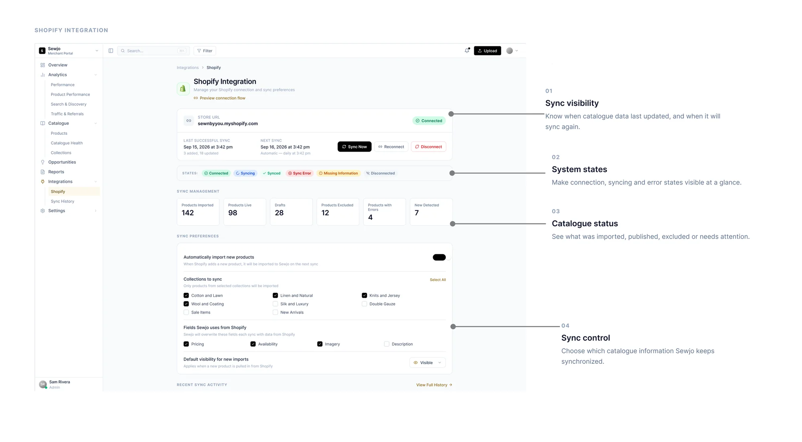
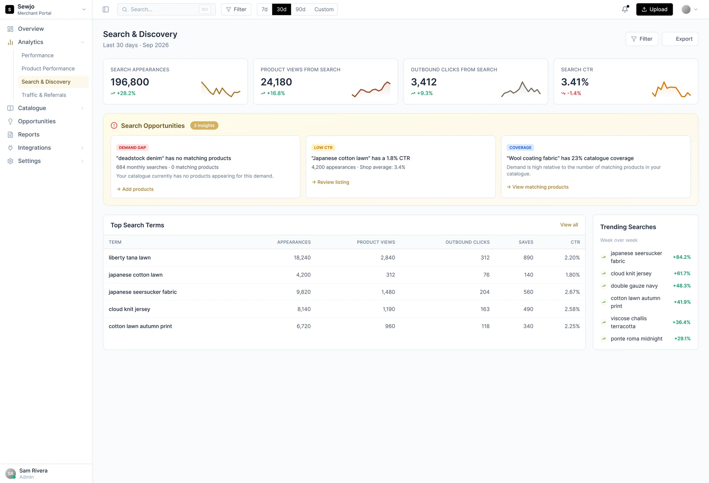

Swatchbook needs merchants to participate. Merchants need a reason to.

Swatchbook brings products from independent shops into one discovery experience for users.
I led the merchant experience, from bringing existing catalogues into Swatchbook to showing shops how their products were being discovered.
- Role
- Lead Product Designer
- Timeline
- May to August 2026
- Status
- Shipped

The challenge
Building the merchant side of a discovery marketplace
Swatchbook depends on independent shops making their products available for discovery. But participation created two immediate challenges.
First, merchants were already managing their products elsewhere. Asking them to recreate and maintain the same catalogue in Swatchbook meant duplicating work they were already doing.
Second, merchants needed a reason to participate. Users could discover products through Swatchbook, but purchases happened on the merchant's own storefront. That meant Sewjo couldn't see the final transaction.
The problem to solve
Reduce the work for merchants without losing sight of the value.
Swatchbook at a glance

Research
Understanding what merchants needed
I spoke with five early merchant partners to understand what would make Swatchbook useful to them and what could make participation difficult.
Rather than starting with a predefined set of features, I used those conversations to understand where Swatchbook needed to fit into merchants' existing workflows.
Across the conversations, two needs stood out.
Finding 01
Reduce duplicate catalogue work
Product information already lived somewhere else. Asking merchants to recreate and maintain it in Swatchbook would add another workflow to their day.
Finding 02
Make product discovery visible
Once products were in Swatchbook, merchants had little visibility into what happened next. They needed to understand which products were getting discovered and driving users to their storefront.
Catalogue integration
Making catalogue management easier
Rather than making Swatchbook another place merchants had to maintain product information, I built the experience around the systems they were already using.
Merchants could either connect an existing catalogue and keep it synchronized, or manage their products manually when a connection wasn't available.
Merchants came in with different setups and different levels of technical comfort. Supporting both paths meant shops could take part without changing how they already worked, and both paths feed the same Swatchbook discovery experience.
10 out of 15 merchants are using the connected catalogue path, while 5 manage their products manually.
Making the integration understandable
Connecting a catalogue reduced duplicate work, but introduced a new challenge:
Merchants needed to understand what was happening as information moved between systems.
I worked with engineering to understand field relationships, sync behaviour, and system states, then translated that complexity into information merchants could understand and act on. The catalogue settings show whether a store is connected, when it last synced, what's in the catalogue, and which controls are available.

Analytics
Measuring discovery without purchase data
A sale would be the clearest measure of value, but purchases happen on each merchant's storefront, outside of Sewjo.
So how do you demonstrate value when you can't measure the final conversion?
Rather than implying a connection to sales we couldn't verify, I focused the reporting on what Sewjo could measure: appearances, views, saves, and outbound clicks.
This gave merchants visibility into Swatchbook's role in discovery without presenting engagement as confirmed sales.
Search & discovery
Turning search behaviour into useful signals
Swatchbook has something a merchant's own analytics doesn't: visibility into both what users are searching for and what merchants have in their catalogues.
I used that relationship to surface unmet demand, low engagement, and gaps in catalogue coverage, then connected those signals to relevant actions while leaving the final decision with the merchant.

Each search opportunity names the signal, shows the numbers behind it, and links to one next step:
Demand gap
Add products
People are searching for something the shop doesn't carry yet.
Low click-through rate
Review the listing
Products show up in search but rarely get clicked.
Catalogue coverage
View matching products
Demand is high, but only part of the catalogue matches it.
Outcome
From merchant catalogues to measurable discovery
The Merchant Dashboard gave independent shops a lower-effort way to participate in Swatchbook while making their role in product discovery visible.
- 15 Merchants
- ~8,000 Products across merchant catalogues
What this taught me
What this taught me
The hardest part wasn't designing the dashboard itself. It was designing around the different ways merchants manage their catalogue data.
A connected catalogue and a manually managed one could power the same Swatchbook experience, but getting them there required different workflows and constraints. Working through those differences pushed the work beyond individual screens and into the system connecting merchants, Sewjo, and users.
The interface was only one part of the design problem. The harder work was making those different systems and workflows feel like one coherent experience.
 Next projectTurning everyday product interactions into reasons to come back
Next projectTurning everyday product interactions into reasons to come back